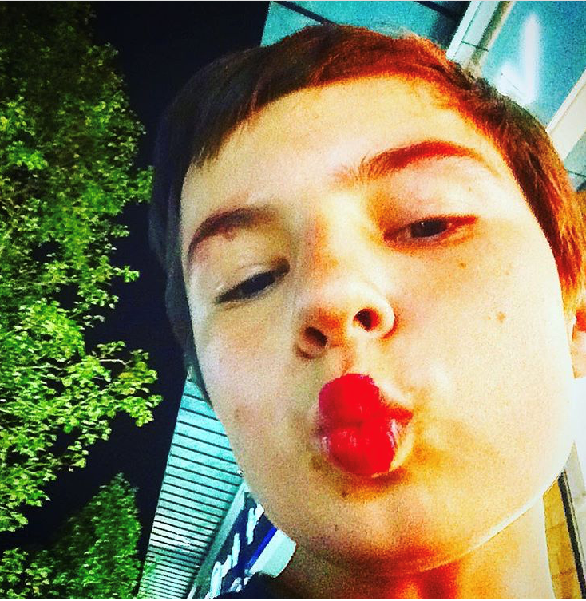
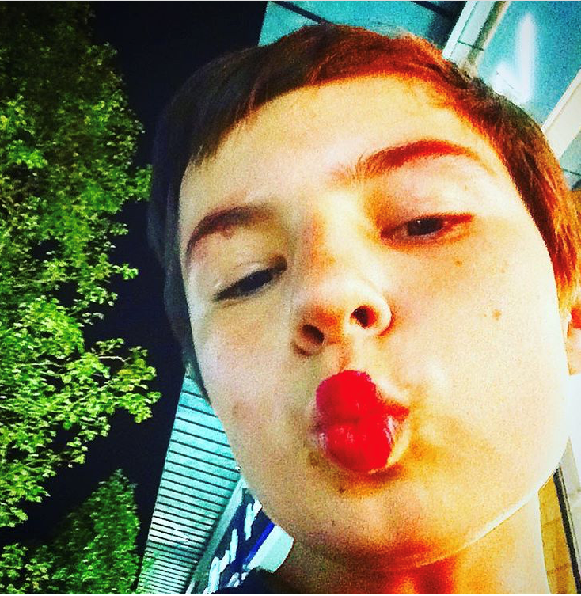

|
|
Thanks for visiting my webpage, this is obviously my first one,
but I'm a GCSE Computing student so hopefully, i should have this
whole thng figured out by then. Enjoy the Hymn I wrote earlier
I wore my Christmas tie to church today.
It’s an innocuous little black number with miniature Santas all over it, but it was more than enough to embarrass my ten-year-old daughter, who prematurely entered a teenage state of mind a decade or so early.
“It’s not even December yet!” she huffed. “Why do you have to be such a geek?”
“’Tis the season to be jolly!” I geeked back. “Don we now our gay apparel!”
“It’s gay, all right,” she said. (I walked right into that one.)
Here is a poem I wrote too
1
After the beautiful boy killed himself I killed myself
and lived in the trash vortex, the j’accuse of the US
with gear and the beclouded night kindness and a mind
like a mule deer in the poorest of zips. My affection
got only so close before I withdrew into self-protection,
my white tail an insolent so long. I lived by borrowing
the stillness and dominion and circumference and how dare I
be anything at all, mud under his boot sole, the roux
of the cookbooks he borrowed from the library,
and I returned and wanted stew and the simmering of him.
2
Where was the equipment for living? Where was the witness?
And where was the Very Rich Hours: the exchange of rings,
the gathering of flowers? Both beautiful and boy and April
gone the way of trumpeting May and ghost structures
of the Gothic, costly blue and gold depicting ...
Could you say beautiful and boy after the beautiful boy
killed himself? April felt like retrograde February,
impoverished color fields of angry, blowing on our hands
in the Middle Ages of Syracuse where we lived in a university
city, joining faith to magical thinking to tactics for fleeing.
3
After the beautiful boy killed himself was
became impossible to hold in one mind, my mind,
and I could not look directly at is, the wind
and the thinly branched sapling that is/was his height
and others wore shoes like his shoes, like
was legal and the swellings of April illegal
made up as it was [was] of gaps and lapses.
I depended on the vertical hell of other people
for story, for a narrative however broken,
a tolerance that could be that charmed or bitter,
could be what takes the place of nouns and verbs.
4
After the beautiful boy killed himself I was a mackle
of presence, a blurred capital letter that marked
a person’s breathing, while he was immaculately
gone except for all the damage to our throats
and to our umbilical selves. Touch was too much
or not enough. White space was obliterated by April’s
mute riot or was it organized into caravans stopped ...
Ah, what luxury to have his crossed letters on paper,
rationed wartime material we have now in abundance,
and map what we know in scratches and around that what?
5
Cuts, knots, rips, fissures, dots, the ink drips
from the person after the beautiful boy killed himself,
stopgap concept, the grief counselor kept it together
or at arm’s length so the ________ can’t find the ________.
I asked her for experience and I got a view from above—
grace, I’ll take it, the casserole, the pepper pot;
I’ll take the fix, the unopened bills for the services
rendered, the renderings billed. Any fix is myopic,
like a mother’s look at the child’s flaws as virtues,
as self-incrimination, the crime being the rich
attachments of subjects, objects, finishes.
6
Clouds blocked the sun all April
after the beautiful boy killed himself,
blocked by the body and the next steps, blocked
the pronouns, blocked and, blocked then,
although, before, so after the beautiful boy
we loved the jagged now for its promise and threat,
for its torn map of Detroit and its alternate plans
of duration and what was it yesterday I said
after the beautiful boy killed himself about stopping
me while I was weeping to say ghost = get = go on.
7
What energies and economies of the daily,
the obvious snows and obliteration and shoveling
disrupted when the beautiful boy killed himself?
He keeps moving down or is it up? Is there up
in the pedestrian advance to the drugstore for more
pain medication, buying a coffee to go and a doughnut?
Why not start from the start, from the hesitant
and make a progress that’s disrupted by the end,
disrupted by the currency? Are you paying for what
you break or the opposite? How do you intend to pay?
8
Come back, come back—we’re asking the highest power
of corporate capital to make you vertical once more
without metaphor—the corporeal you. We will assign the pronoun
by shareholders and trustees who will agree to your exceptional
growth potential, no, growth imperative, to the cult of you
and the evangelism of the ask. We burn, we spread like disease
but the brutal agglomeration of you we love, we pull you up
by your bootstraps, we trade in the sublime machine for you.
We will endure you as you did not endure the terrible world,
I thought after the beautiful boy killed himself.
.png) 
